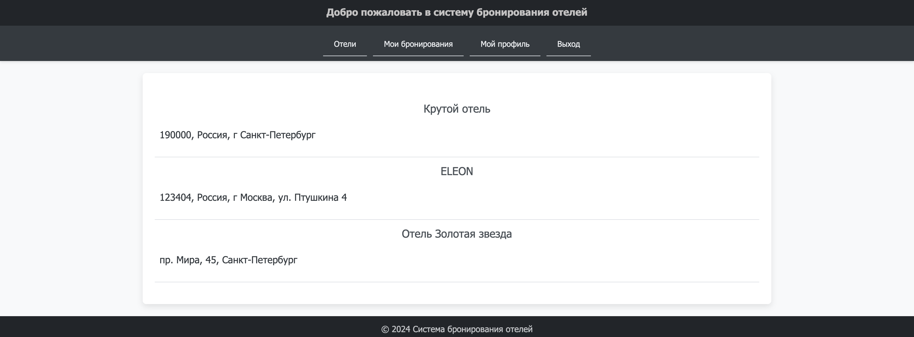
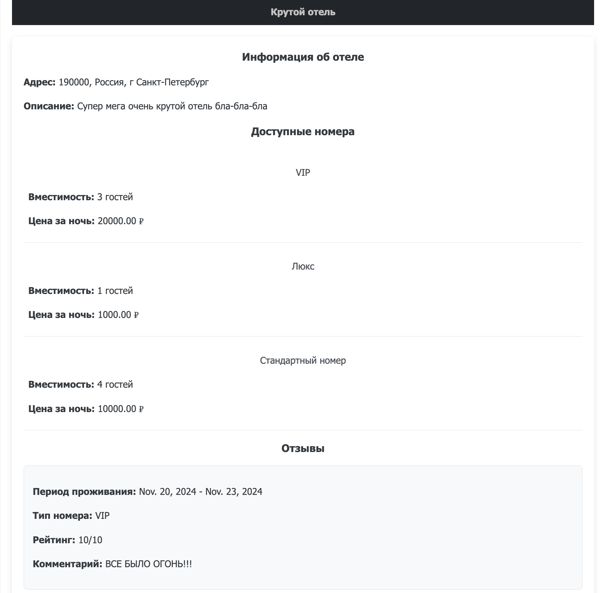
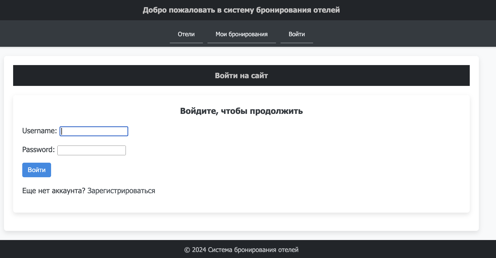
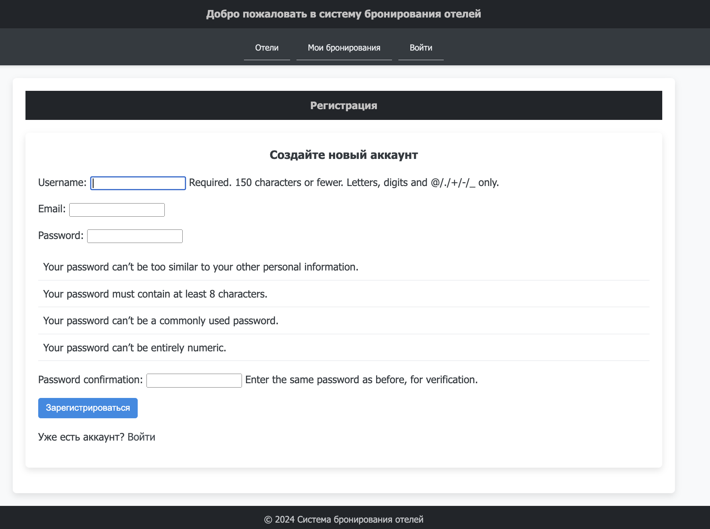
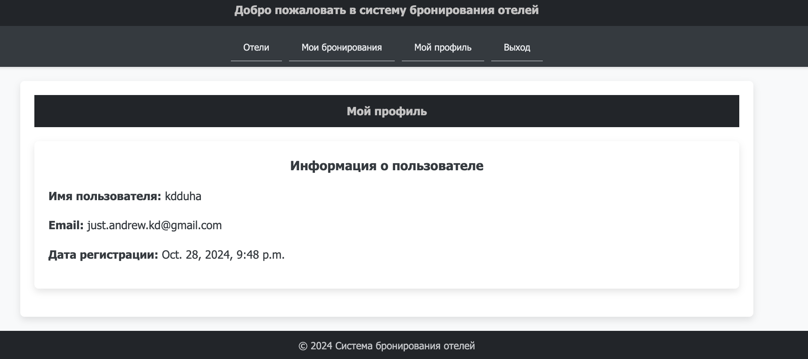
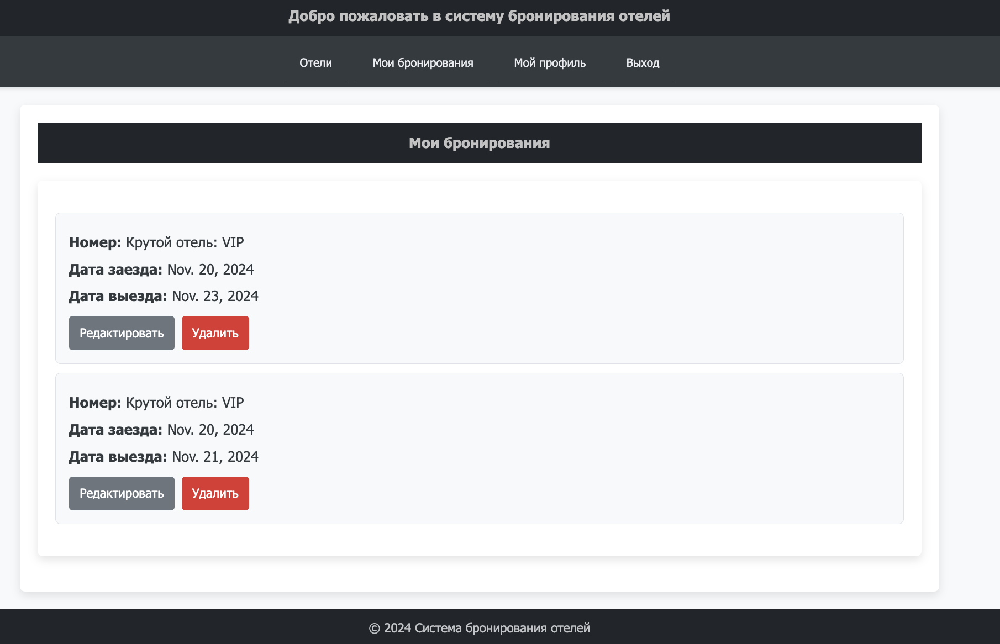
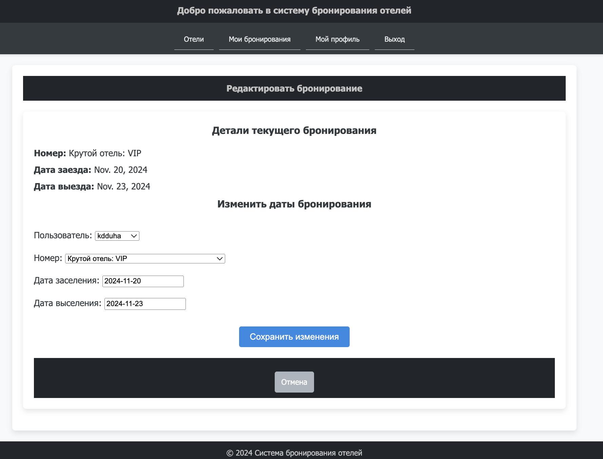
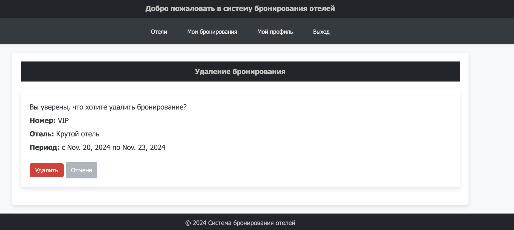
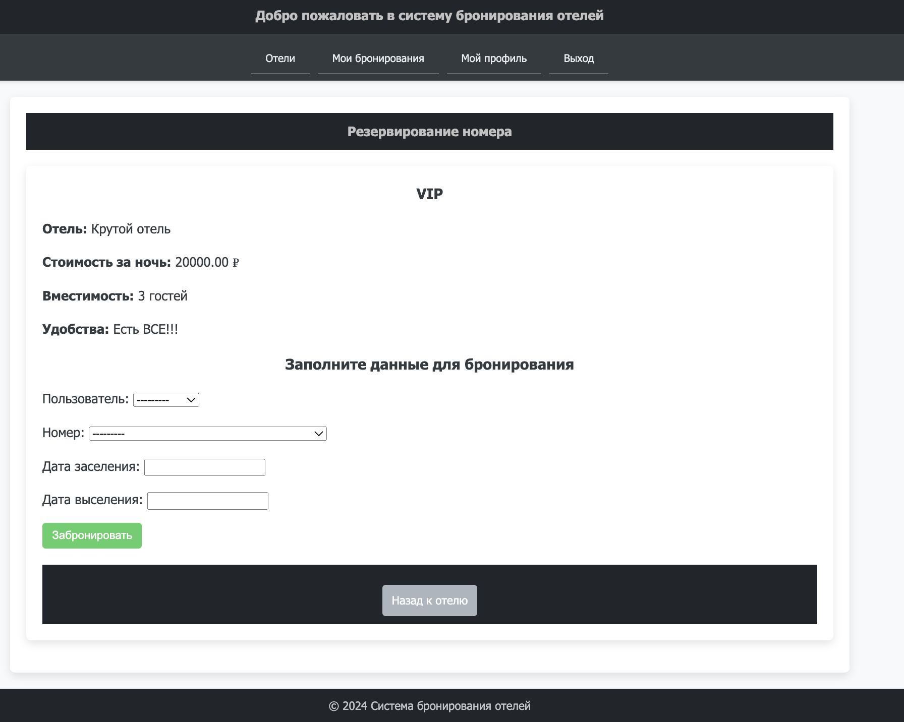
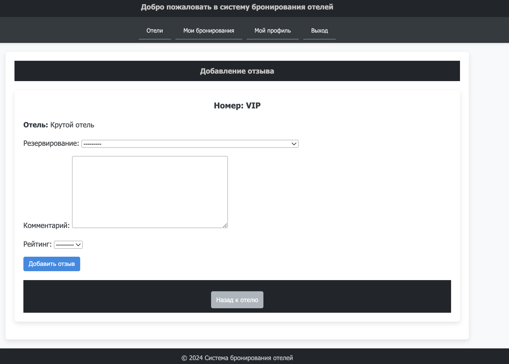

Task
Условие
Список отелей.
Необходимо учитывать название отеля, владельца отеля, адрес, описание, типы номеров, стоимость, вместимость, удобства. Необходимо реализовать следующий функционал:
- Регистрация новых пользователей.
- Просмотр и резервирование номеров. Пользователь должен иметь возможность редактирования и удаления своих резервирований.
- Написание отзывов к номерам. При добавлении комментариев, должны сохраняться период проживания, текст комментария, рейтинг (1-10), информация о комментаторе.
- Администратор должен иметь возможность заселить пользователя в отель и выселить из отеля средствами Django-admin.
- В клиентской части должна формироваться таблица, отображающая постояльцев отеля за последний месяц.
Выполнение
По факту выполнение всей работы состоит из следующих шагов:
- создание и описание модели данных => миграция данных
- создание views слоя в MVC (Model-View-Controller) или в случае django MVT (Model-View-Template)
- создание forms в случае необходимости
- прописывание templates для динамической генерации html страниц
- регистрация всех эндпоинтов в urls
- базовое css оформление html страниц
Результат
Для запуска проекта необходимо прописать в его корне:
python manage.py runserver
Далее пройти по стандартному адресу и порту: http://127.0.0.1:8000/
Все существующие пути выглядят следующим образом (но в каждый из них можно попасть через UX интерфейс в клиентской части, плавно переходя между страничками):
urlpatterns = [
path('accounts/login/', auth_views.LoginView.as_view(), name='login'),
path('accounts/logout/', auth_views.LogoutView.as_view(), name='logout'),
path("login/", views.login_view, name="login"),
path("logout/", views.logout_view, name="logout"),
path("profile/", views.profile, name="profile"),
path("signup/", views.signup_view, name="signup"),
path("", views.HotelListView.as_view(), name="hotel_list"),
path("hotel/<int:pk>/", views.HotelDetailView.as_view(), name="hotel_detail"),
path("room/<int:room_id>/reserve/", views.reserve_room, name="reserve_room"),
path("reservations/", views.reservation_list, name="reservation_list"),
path("reservation/<int:reservation_id>/edit/", views.edit_reservation, name="edit_reservation"),
path("reservation/<int:reservation_id>/delete/", views.delete_reservation, name="delete_reservation"),
path("room/<int:room_id>/review/", views.add_review, name="add_review"),
path("recent-guests/", views.recent_guests, name="recent_guests"),
]
Сразу встречает список всех отелей.

Можно просматривать информацию о каждом отеле в отдельности, если просто нажать на него.

Для более детального просмотра страниц необходимо авторизоваться, пройдя в соответсвующий раздел через навигационное меню. Иначе при попытке "провалиться" куда-нибудь, пользователя насильно выкинет на авторизацию.

Также можно самостоятельно зарегистрироваться.

При авторизации есть возможность просмотреть самую базовую информацию о своем аккаунте.

Далее можно взаимодействовать с сервисом. Например, изучить свои бронирования.

существует фильтрация и пагинация у бОльшей части всех листингов!
Вот таким образом, например, выглядит листинг бронирований пользователей. - фильтрация пробрасывается через GET запросы от html и применяется в случае необходимости - пагинация же работает через стандартный Paginator
def reservation_list(request):
reservations = Reservation.objects.filter(client=request.user)
check_in_date = request.GET.get('check_in_date', None)
check_out_date = request.GET.get('check_out_date', None)
room_id = request.GET.get('room_id', None)
hotel_name = request.GET.get('hotel_name', None)
if check_in_date:
reservations = reservations.filter(check_in_date__gte=check_in_date)
if check_out_date:
reservations = reservations.filter(check_out_date__lte=check_out_date)
if room_id:
reservations = reservations.filter(room_id=room_id)
if hotel_name:
reservations = reservations.filter(room__hotel__name__icontains=hotel_name)
room_types = RoomType.objects.values_list('name', flat=True).distinct()
hotels = Hotel.objects.values_list('name', flat=True).distinct()
paginator = Paginator(reservations, 5)
page_number = request.GET.get('page')
page_obj = paginator.get_page(page_number)
return render(request, "reservation_list.html", {
"reservations": page_obj,
"check_in_date": check_in_date,
"check_out_date": check_out_date,
"room_id": room_id,
"room_types": room_types,
"hotels": hotels,
})
И либо их отредактировать:

Либо удалить в случае админа:

И также можно у каждого отеля оформить бронирование:

А на каждое бронирование при необходимости добавить отзыв

При этом каждое ревью в случае удачи (т.е. POST запроса и добавления) редиректит на детали отеля, где можно просмотреть добавленный отзыв
@login_required
def add_review(request, room_id):
room = get_object_or_404(Room, id=room_id)
if request.method == "POST":
form = ReviewForm(request.POST)
if form.is_valid():
review = form.save(commit=False)
review.user = request.user
review.room = room
review.save()
return redirect("hotel_detail", pk=room.hotel.id)
else:
form = ReviewForm()
return render(request, "add_review.html", {"form": form, "room": room})